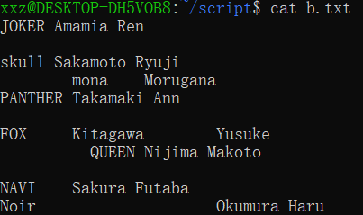
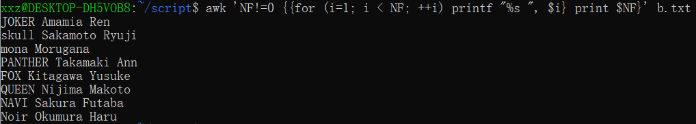
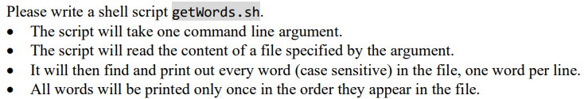
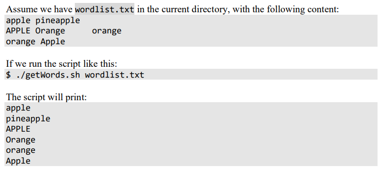

Shell Command & Script 笔记
关于 shell command 和 shell script 的内容也是在 ENGG1340 课上系统学习的；但是课上教的内容太浅，甚至连应付考试 (没错，就是 midterm quiz) 都成问题。于是稍微自己加了点餐，现记录如下。
本文中的 shell command 与 shell script 均采用 bash shell。
Variables in Shell Script
Defining Variables
有 3 种在 shell script
中定义变量的方式。然而无论哪一种，在变量赋值语句
var=[value] (注意， =
左右不能加空格) 中，等号右边都必须是一个字符串
string。
[value]is enclosed in single quotation marks''var='Trumpet': 单引号中的内容不支持 variable substitution[value]is enclosed in double quotation marks""var2="$var": 双引号中的内容支持 variable substitution (所以var2的值也是 stringtrumpet)[value]is enclosed in backquote` `or$()反引号
` `与符号$()的作用一致; 反引号中支持输入 shell command，并以 shell command 运行后输出的结果作为变量的值。Note that the output of any shell command could be expressed by a string.
Accessing Variables
使用 dollar 符号 $ 来访问变量。
grep
grep 是 按行
处理文本的重要命令之一，也是课上接触的唯一一个文本处理命令。而且这一命令也在我搭建该博客时起到了重要作用：查找关键词的功能真的超级好用。
grep Specific Lines
grep 'foo' bar.txt最朴素的 grep 用法，在
bar.txt中查找所有包含foo的行并打印。grep -E '[regex pattern]' bar.txt使用 正则表达式 (regular expression) 匹配。加上 flag
-E后，在bar.txt中查找所有匹配上正则表达式模式 (pattern)[regex pattern]的行并输出。
Flags for grep
这里介绍一些常用的修饰 grep 的 flags。
--invert-match (
-v)输出所有不匹配模式的行。
--only-matching (
-o)仅输出与模式
[regex pattern]匹配的部分，一次匹配占一行。例：grep -E -o '[a-zA-Z]' bar.txt将输出bar.txt中的所有字母，一个字母占一行。--count (
-c)仅输出匹配模式的行的数量。复合
-vc输出不匹配模式的行的数量。--line-number (
-n)在输出匹配模式的行的同时输出其行号。
--recursive (
-r)递归查找子目录中的文件。
sed
sed 实际上是 Linux 中的一种文本编辑器。sed 命令本质上是以命令行的形式对编辑器 sed 进行调用。
与 grep 相同，sed 也是 按行
对文本进行处理的：其基础语法是 sed '[script]' bar.txt。
add a line (a/i)
在 bar.txt 的第 \(2\) 行后添加新一行文本 "Joker"
sed '2aJoker' bar.txt在 bar.txt 的第 \(3\) 行前添加新一行文本 "Skull"
sed '3iSkull' bar.txt
delete lines (d)
删除 bar.txt 的第 \(2\) 行
sed '2d' bar.txt删除 bar.txt 的 \(1-3\) 行
sed '1,3d' bar.txt删除 bar.txt 的 \(3\) 到最后一行 (使用
$符号)sed '3,$d' bar.txt
show lines (p)
显示 bar.txt 的 \(2-5\) 行:
sed -n '2,5p' bar.txt (注意一定要加 flag
-n)
change lines (c)
将 bar.txt 的 \(2-5\) 修改为 "mona":
sed '2,5cmona' bar.txt
(相当于先将 \(2-5\) 删除，再在新的第 \(2\) 行前添加一行 "mona")
search data
接下来是 sed 命令的高阶用法，[script] 语法变得更加复杂:
不同的成分之间将用 / 进行分隔。并且，[script]
是支持正则表达式的，可以用正则表达式而不是纯字符串来匹配模式。
找到 bar.txt 所有包含 "oo" 的行
sed -n '/oo/p' bar.txt(与grep "oo" bar.txt等价)找到 bar.txt 所有不包含 "oo" 的行 (删除所有包含 "oo" 的行并输出剩余的部分)
sed '/oo/d' bar.txt(与grep -v "oo" bar.txt等价)将 bar.txt 中所有包含 "oo" 的行中第一次出现的 "oo" 修改成 "kk"
sed 's/oo/kk/' bar.txt只替换每行中第一次出现的字串显然不具有很大的应用价值，我们加上标识符
g来将所有 "oo" 替换成 "kk"sed 's/oo/kk/g' bar.txt
awk
awk 是一种语法上和 C
类似的文本编辑语言，因此其语法比 shell script
更好理解。awk 命令的本质是执行 awk
语言的脚本，这使其能完成很复杂的文本格式化功能。
根据未老师的说法，sed
命令倾向于将一行看作一个整体修改，而 awk
则倾向于将一行看作很多字段的集合 (类似于表格)。awk
的基础语法是 awk '[awk script]' bar.txt。
basic script
先介绍 awk 最基础的一个用法，即 [awk script] 呈现
condition {action} 的语法结构。
输出 bar.txt 中所有字段数等于 \(3\) 的行 (分隔符为空格或制表符)：
awk 'NF==3' bar.txt(实际上是awk 'NF==3 {print $0}' bar.txt的简写)输出 bar.txt 中所有字段数等于 \(3\) 的行 (分隔符为逗号
,)：awk -F',' 'NF==3' bar.txt输出 bar.txt 中所有字段数等于 \(3\) 的行中的第 \(1\) 与第 \(3\) 个字段 (分隔符为空格或制表符)：
awk 'NF==3 {print $1, $3}'
除此之外，我们甚至能在 [awk script] 中写入用 awk
语言编写的程序 (和 C
语法极其相似)，来完成一系列复杂的文本格式化。我将用以下两个例子进行说明：
Example 1

对于这一系列杂乱的字段，我们想将其整理成一行中每两个字段间只保留一个空格作为分隔。这一过程用 C 语言来实现可以说非常简单，但是用 shell script 我一时半会真的想不出来。
此时，我们直接使用 awk 命令作为 shell 与 C 语言的桥梁：
awk 'NF!=0 { {for (i=1;i<NF;++i) printf "%s ", $i} print $NF }' b.txt
是不是一下变得简单多了：根据 basic script 的格式，我们先用
NF!=0 条件去掉空行，再进行 {} 中的 action
阶段；之后就几乎全是 C 语言的语法了。效果如下：

Example 2
这是 midtern quiz 的一个题目，当时没有接触过 sed, awk, tr 命令的我一筹莫展。但在学会这些命令之后，这种题可以说是迎刃而解。


(将被若干空格，制表符，换行符等 [:space:]
符号分隔的字段整理成一行一个的形式，并且进行去重)
一行 shell script 就可以解决:
tr '[[:space:]]' '\n' < $1 | awk 'NF!=0 && !a[$0]++'
(思路来自 zrz)
真的很妙，使用 tr 命令把字段展开后 (tr 命令的用法见下) 直接用 awk
语言定义了一个桶，对字段进行统计，这样就完成了去重。
(注意，在 basic script 中的 condition {action} 范式中，缺省
action 默认是 print $0)
如果想要做的更绝点，可以只用一个 awk 命令解决 (虽然这样本质上就是用 C
来写而不是 shell script 了)，即
awk '{for (i = 1;i <= NF; ++i) {{if (a[$i] == 0) print $i} a[$i]++}}' $1
总而言之，[awk script] 中可以包含这些内容:
BEGIN{} (在文本处理前执行的 action)，
{} 逐行处理文本时执行的
action，END{} 处理完所有文本后执行的
action。不在 {} 中的则是条件 condition (可缺省)。
另外，awk 也能像 sed 一样通过字符串或正则表达式进行模式匹配，这里就不多展开了，有 grep 与 sed 完成模式匹配的相关操作已经足够了。
tr
tr
命令的应用就比较简单粗暴了，其完成的是对指定文本的替换，和
sed 's/.../.../g' file 的功能几乎一致 (sed
更强大，其不仅能转换字符，还能转换模式)。
语法如下
tr '[SET1]' '[SET2]' < bar.txt，[SET1] 与
[SET2]
可以是字符集，也可以是字符串，但并不是模式！因此它不支持正则表达式描述的模式匹配，只能够匹配字符串或字符集。
将 bar.txt 中所有的空白字符 (空格，制表符...) 全部转换为换行符：
tr '[[:blank:]]' '\n' < bar.txt将 bar.txt 中所有的小写字母转换为大写字母：
tr '[[:lower:]]' '[[:upper:]]' < bar.txt(注意，当 SET1 与 SET2 是一一对应的关系时，字符的转换才一一对应)删除 bar.txt 中的所有空字符 (空格，制表符，换行符...) 使其称为一条连续的字符串:
tr -d '[[:space:]]' < bar.txt(使用 flag-d进行删除)使 bar.txt 中所有连续的字母缩减成只有一个 (例，"ooookay!" 缩减为 "okay!")：
tr -s '[[:alpha:]]' < bar.txt(使用 flag-s)
Numerical Computation
由于 shell comment 中的 variable 只有 string 一种类型，若想方便快捷的进行算数运算，需要使用数学计算命令。
Double Parentheses
最推荐使用的命令是双小括号
(( ))；其语法为 ((expressions)):
非常的简单，将算数表达式置于双小括号中即可。此外，写入
(( )) 中的算术表达式可以不止一个: 多个算数表达式用逗号
, 隔开，最后一个表达式 将作为
(( )) 命令的执行结果。
使用 dollar 符号 $ 获取 (( ))
命令的结果；这与使用 $ 获取变量值是类似的。
此外，写入 (( )) 中的 expressions
中的变量无需加 $ 前缀：(( ))
命令会自动解析其中表达式的变量名，这也更符合程序员的书写习惯。
例：先定义变量 a=0，以下三个命令是等价的
((a=a+15)), ((a+=15)),
a=$((a+15))。分别执行这三个命令后，echo $a
的结果都是 \(15\)。
Square Brackets
中括号命令 [ ] 与双小括号 (( ))
类似，但使用上并不是那么灵活。具体来说，[ ]
命令不能脱离赋值语句 = 而单独存在。
比如，((a+=10)) 命令可以让变量 a 自加 \(10\)，而替换成中括号，[a+=10]
这一命令是不合法的。我们必须写成赋值语句的形式：a=$[a+=10]
或是逻辑上更为自然的 a=$[a+10]。
由此可见，(( )) 比 [ ] 的使用更加灵活。
let Expression
这是课上介绍的方法：使用 let
命令来进行算数运算。let 命令的基本语法是
let [expressions]。与 (( ))
类似，[expressions]
中也可以写入多个算数表达式，let
将取最后一个表达式的结果作为整个命令的执行结果。不同之处在于，let
使用空格而不是逗号 ,
对多个表达式进行分隔。
此外，let 不能与赋值语句 =
复合：a=$((a+10)) 改写为 a=let a+10
是不合法的；必须写成 let a+=10。
let 命令与 [ ]
命令优缺点互补：然而，两个命令都不如万能的 (( ))。
Reference
- Runoob sed, awk, tr
- 栗筝i-Shell 脚本数字运算
- Boblim-Bash 括号